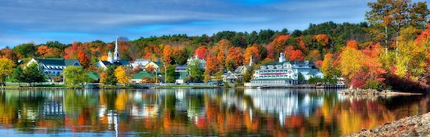
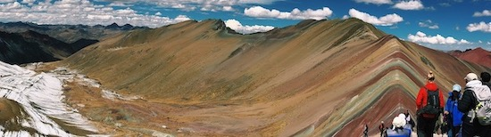

Rebecca Dragon
New Hampshire
I grew up in the the lakes region of New Hampshire. We had everything you would want in a small New England town. Gunstock mountain was a 10 minute drive.
There were three lakes surronding the area: Lake Opeechee, Lake Winisquam, and Lake Winipesaekee. Here I developed my love adventure and being outdoors.
I still spend time hiking, climbing and playing tennis up in New Hampshire when I find a free weekend.

Out into the world
I have been lucky enough to travel a lot for my age. I've traveled to many European Countries, Peru, and even a road trip across the USA! I have lived in Boston,
New York, and San Francisco.

Livin' the Dream
More like dreaming of what living could be like! I found I had a passion for entrepreneurship while living in San Francisco. I worked at a startup in SF while developing
my own IOS app. I had always wanted to build apps but San Fransisco was the first time I was able to find people willing to work on something!